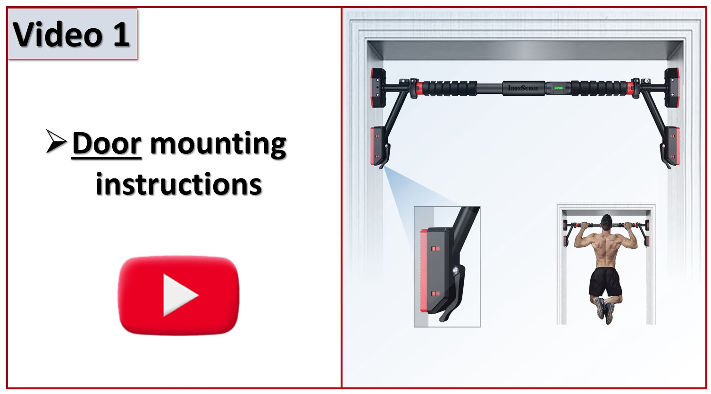
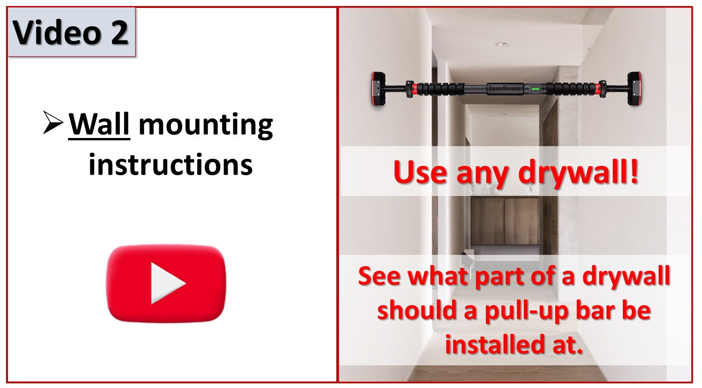
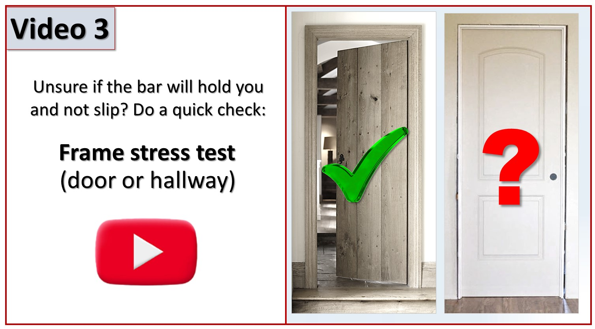

Introducing our top-of-the-line exercise set, designed to take your workout routine to the next level!
Claim your complementary item here (if purchased during a promotional period)
Order your complementary item
Please watch this video for general installation instructions and doorway reinforcement (hollow doors only)
If you don’t have a solid doorframe to support a bar – no worries! The video below (Video 2) shows a lifehack for using ANY type of drywall to hold your pull-up bar. It’s a game changer!
Please watch video 3 for for a simple, risk-free test of the doorframe strength
Exercise videos
Click for exercise videos